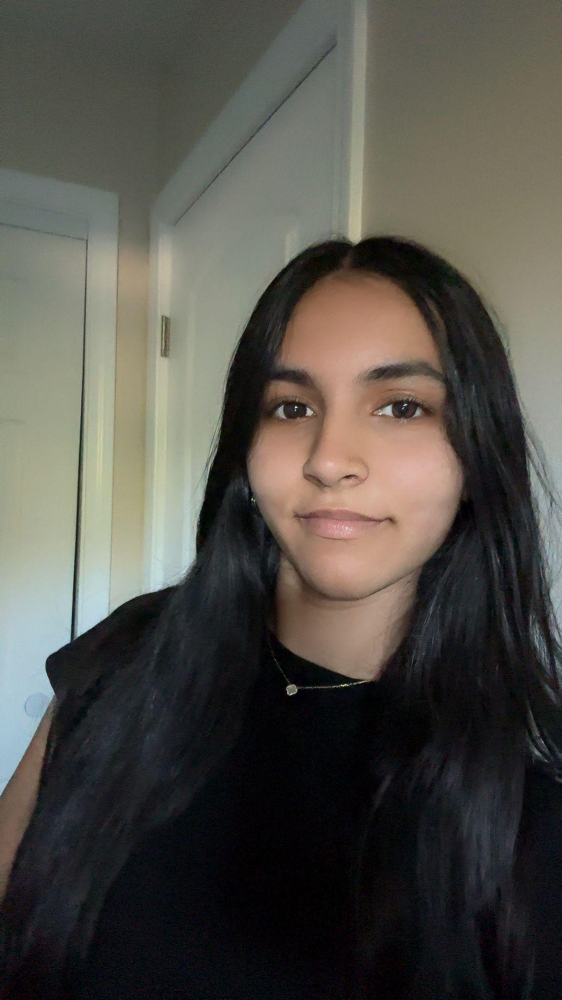

Simir Aulakh
Fremont, California Chapter President
Hi, my name is Simir Aulakh and I’m currently a sophomore at John F. Kennedy. I’m excited to start this new chapter because I want to help create a positive impact in my community. I enjoy working with others, taking on leadership opportunities, and bringing new ideas to the table.
I also hope to become a pediatrician in the future, which motivates me to make a difference in the lives of others. I’m looking forward to growing Hearts for Healing, meeting new people, and making a difference together.